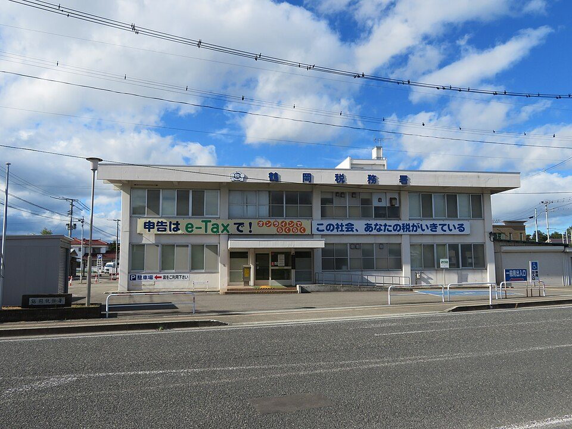

トップ › 社会人お得技ノート
社会人お得技ノート② 税金・控除
- 調査日:
- 社会人お得技ノート 2/8
要点まとめ
- 2026年分から基礎控除が最大104万円に（合計所得489万円以下、年末調整は同年12月）[1]
- マイカー・自転車通勤の通勤手当の非課税枠が2026年4月から引き上げ[2]
- 医療費控除などで確定申告すると、ふるさと納税のワンストップ特例は無効。寄附金控除も記載する[3]
- 自費の資格取得費・研修費などが多い年は、会社員でも「特定支出控除」が使える場合がある[4]

「申告はe-Taxで！」の横断幕を掲げた鶴岡税務署（山形県）
ラベル: 新制度・改正 改悪・注意 終了
2026年の主な改正
新制度・改正 基礎控除の引き上げ（いわゆる「178万円の壁」）
合計所得489万円以下なら基礎控除は最大104万円[1]
基礎控除の本則
変更前：58万円→変更後：62万円
2026年分から
くわしく
- 2026年分と2027年分は特例の加算がある[1][5]
- 給与所得控除の最低保障額74万円と合わせた178万円が「178万円の壁」と呼ばれる[5][6]
- 「178万円の壁」は法令上の用語ではない[5]
- 会社員は2026年12月の年末調整で反映される[5]
新制度・改正 マイカー・自転車通勤の非課税枠を引き上げ（2026年4月〜）
片道65km以上が4区分に分かれて引き上げ[2]
片道95km以上の非課税枠
変更前：月38,700円→変更後：月66,400円
2026年4月から
くわしく
- これまでは片道55km以上が一律月38,700円だった[2][7]
- 最も長い95km以上は月66,400円になった[2][7]
- 勤務先周辺などの一定の駐車場料金を負担していれば月最大5,000円を加算できる（片道2km未満は対象外）[8]
新制度・改正 一般生命保険料控除の上限6万円に（23歳未満の扶養親族あり）
23歳未満の扶養親族がいる人は、上限が6万円に上がる[9]
一般生命保険料控除の上限
変更前：4万円→変更後：6万円
2026年分から
くわしく
- 対象は新契約の生命保険料を払う場合[9]
- 生命保険料控除全体の上限12万円は変わらない[9]
- 当初は2026年分の特例だったが、令和8年度税制改正大綱で1年延長[10]
新制度・改正 セルフメディケーション税制のスイッチOTC部分が恒久化
スイッチOTC医薬品の部分は適用期限が撤廃[10]
くわしく
- 対象の市販薬の年間購入額が1万2千円を超えた部分を控除できる（上限8万8千円）[11]
- 健診や予防接種などの取組が要件[11]
- 通常の医療費控除とはどちらか一方しか選べない[11]
- 令和8年度税制改正大綱で、スイッチOTC医薬品以外の部分は5年延長[10][12]
- 対象範囲の見直しは2027年分以後に適用[10][12]
知っておきたい控除
特定支出控除：自費の資格取得費・研修費などを差し引ける
特定支出の合計が給与所得控除額の1/2を超えた部分を控除できる[4]
くわしく
- 対象は通勤費、職務上の旅費、転居費、研修費、資格取得費、単身赴任の帰宅旅費、勤務必要経費[4]
- 勤務必要経費（図書費・衣服費・交際費等）は上限65万円[4]
- 例：年収500万円なら給与所得控除は144万円なので、72万円を超えた部分が対象[4][6]
- 確定申告が必要で、給与の支払者（またはキャリアコンサルタント）の証明書などを添付[4]
医療費控除に入れられる、見落としやすい費用
通院のための電車・バス代は対象（領収書がなければ記録を残す）[13]
くわしく
- タクシー代は公共交通機関が使えない場合だけ対象[13]
- 自家用車のガソリン代・駐車場代は対象外[14]
- 子どもの通院の付き添いの交通費は、一人で通院するのが危険な場合に限り対象[13][15]
- 治療目的の市販薬は対象、予防・健康増進のためのものは対象外[13]
- 歯列矯正は子どもなら対象、大人は必要と認められる場合だけ（美容目的は対象外）[16]
雑損控除：シロアリ被害や雪下ろし費用も対象になる
災害・盗難・横領の損失が対象、詐欺や恐喝は対象外[17]
くわしく
- 控除しきれない分は原則3年繰り越せる[17]
- シロアリ被害の修繕費・駆除費は対象、予防費用は対象外[18]
- 豪雪で家屋が倒壊するのを防ぐための雪下ろし費用も対象[19]
申告の落とし穴
改悪・注意 確定申告するとふるさと納税のワンストップ特例は無効
ワンストップ特例を申請した分も申告書に記載が必要[3]
くわしく
- 医療費控除などで確定申告をする場合は、寄附金控除を申告書に記載する[3][20]
- 記載を忘れたら、原則として法定申告期限から5年以内なら更正の請求ができることがある[21]
改悪・注意 副業の赤字は、原則として給与と相殺できない
雑所得の赤字は給与所得と損益通算できない[22]
くわしく
- 帳簿書類を保存していない副業の所得は、原則「業務に係る雑所得」になる[23]
- 事業所得になるかは「社会通念上事業と称するに足る程度」かどうかで判断[23]
- 帳簿をつければ事業所得になるわけではない[23][24]
- 実態のない事業所得の申告は否認される可能性がある[23][24]
出典（24件）
閲覧日はいずれも2026年11月1日
- 基礎控除の引上げ等について（国税庁）
- 通勤手当の非課税限度額の改正について（国税庁）
- No.1155 ふるさと納税（寄附金控除）（国税庁）
- No.1415 給与所得者の特定支出控除（国税庁）
- 令和8年度税制改正（所得税の基礎控除の引上げ等関係）Q&A（国税庁）
- No.1410 給与所得控除（国税庁）
- No.2585 マイカー・自転車通勤者の通勤手当（国税庁）
- 通勤手当の非課税限度額の改正に関するQ&A（国税庁）
- No.1140 生命保険料控除（国税庁）
- 令和8年度税制改正の大綱（財務省）
- セルフメディケーション税制（医療費控除の特例）について（厚生労働省）
- セルフメディケーション税制に関するQ&A（厚生労働省）
- No.1122 医療費控除の対象となる医療費（国税庁）
- 質疑応答事例「自家用車で通院する場合のガソリン代等」（国税庁）
- 質疑応答事例「患者の世話のための家族の交通費」（国税庁）
- No.1128 医療費控除の対象となる歯の治療費の具体例（国税庁）
- No.1110 災害や盗難などで損害を受けたとき（雑損控除）（国税庁）
- 質疑応答事例「シロアリの駆除費用」（国税庁）
- 災害に関する税金の取扱い（リーフレット）（仙台国税局）
- ふるさと納税のワンストップ特例（東京国税局）
- No.2026 確定申告を間違えたとき（国税庁）
- No.2250 損益通算（国税庁）
- 所得税基本通達 法第35条（雑所得）関係（国税庁）
- No.2070 青色申告制度（国税庁）
写真・画像の出典（1件）
- 「申告はe-Taxで！」の横断幕を掲げた鶴岡税務署（山形県）
写真: Ebiebi2／Wikimedia Commons（CC BY-SA 4.0）